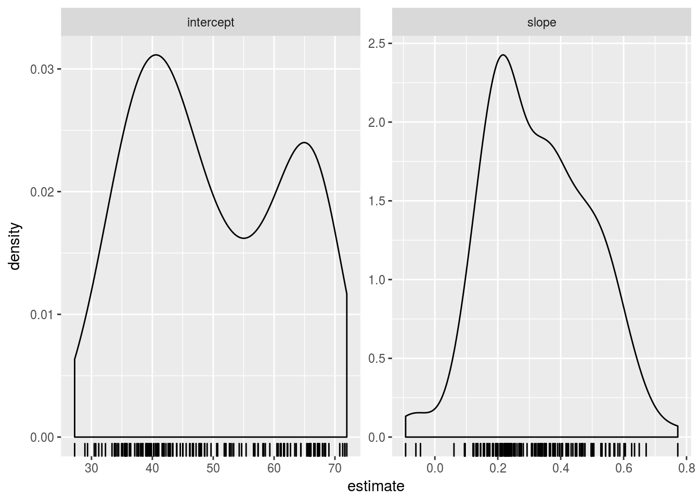
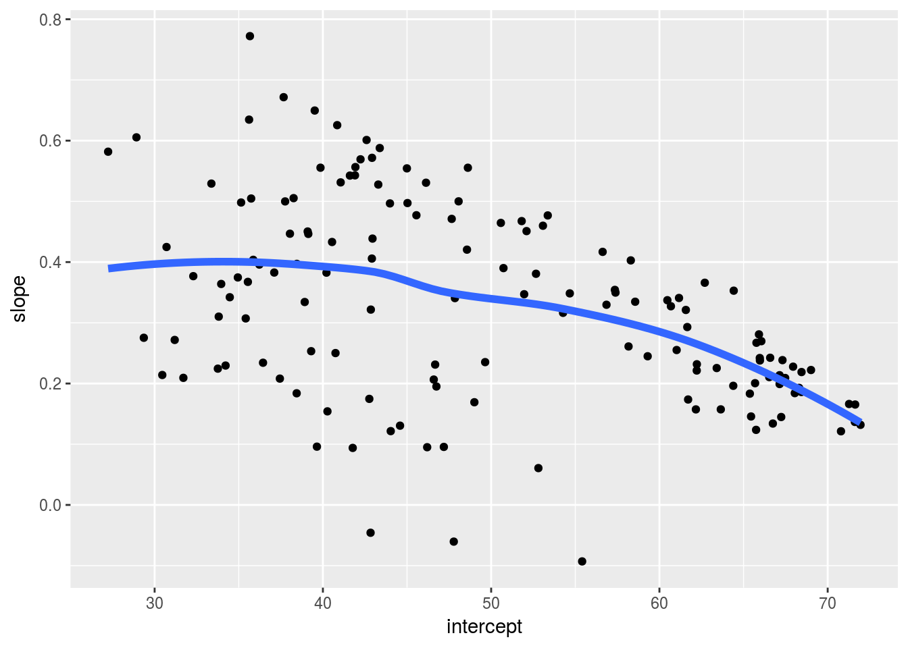

13 Split-Apply-Combine Pattern in Data Modeling
13.1 Readings
- Wickham, Hadley, 2011. The Split-Apply-Combine Strategy for Data Analysis, Journal of Statistical Software, Volume 40, Issue 1.
- R4DS Many Models
If you are not familiar with the basic workflow of fitting models with R, you should review two chapters:
13.2 Split-Apply-Combine

A common analytical pattern is to:
- split data into pieces,
- apply some function to each piece,
- combine the results back together again.
Generally avoid using loops when you need to do Split-Apply-Combine, consider these alternatives instead:
- Entry level:
dplyr::group_by() - General approach: nesting
*apllyfunctions andplyrpackage (non-tidyverse solution)
13.3 Lesson
Lesson below is adapted from UBC’s STAT 545 by Professor Jenny Bryan.
13.3.1 Think before you create excerpts of your data …
If you feel the urge to store a little snippet of your data:
snippet <- my_big_dataset %>%
filter(some_variable == some_value)
## or
snippet <- subset(my_big_dataset, some_variable == some_value)Stop and ask yourself …
Do I want to create mini datasets for each level of some factor (or unique combination of several factors) … in order to compute or graph something? If YES, use proper data aggregation techniques or facetting in
ggplot2– don’t subset the data. Or, more realistically, only subset the data as a temporary measure while you develop your elegant code for computing on or visualizing these data subsets.
If NO, then maybe you really do need to store a copy of a subset of the data. But seriously consider whether one of these strategies that subset at “compute time” will get the job done:
Pass an intact data frame and use the
subset =argument of a command. Many functions have it!## regress life expectancy on year for Canada canada_fit <- lm(lifeExp ~ year, data = gapminder, subset = country == "Canada")Pipe filtered data into a command. A very general solution.
## compare gdpPercap in Australia vs New Zealand oceania_ttest <- gapminder %>% filter(continent == "Asia") %>% t.test(gdpPercap ~ country, data = .)
Creating copies and excerpts of your data clutters up your workspace, script, and mind, often leading to confusion and mistakes. It can be useful during development, but try to eliminate this as you polish your analysis.
13.3.2 Prerequisite
Load tidyverse and gapminder:
library(gapminder)
library(tidyverse)13.3.3 Split Apply Combine
A common analytical pattern is to
- split data into pieces,
- apply some function to each piece,
- combine the results back together again.
R has specialized tools for this that are much nicer than whatever DIY approach you might be contemplating. Especially if it involves for() loops. There’s nothing inherently wrong or evil about for() loops, but you will spend alot of time and characters on bookkeeping tasks. That can be a great way to pilot a computation, because it is so blessedly concrete. But consider revisiting your implementation with higher-level data aggregation tools once you’ve established proof-of-principle.
In base R, these are the “apply” functions, such as apply(), aggregate(), tapply(), and by(). We prefer to use similar tools from the tidyverse, due to a more consistent interface, analysis-friendly output, and a more concise way to describe what to compute. This article by Hadley Wickham – The split-apply-combine strategy for data analysis – provides a good high-level overview, but know that the tidyverse approaches outlined here now supercede the plyr package described there.
13.3.4 Entry level: dplyr::group_by()
The most lightweight solution is given by dplyr::group_by(). group_by() adds some extra grouping structure to a data frame, based on levels of one or more categorical variables, but leaves the data frame intact. Then you can do group-wise computations using various functions in the tidyverse that automatically honor these groups.
The main function here is summarize(), which collapses each group into a single row in a new group-summarized data frame.
When does this break down? If anything you want to compute for a group is more complicated than, say, a single number, you have outgrown dplyr::summarize(). Example: getting the range of life expectancies seen for each continent doesn’t work with the code below.
gapminder %>%
group_by(continent) %>%
summarize(range = range(lifeExp))Now, in this case, we could reframe this in a summarize()-friendly form, but that doesn’t work in general.
gapminder %>%
group_by(continent) %>%
summarize_each(funs(min, max), lifeExp)## `summarise_each()` is deprecated.
## Use `summarise_all()`, `summarise_at()` or `summarise_if()` instead.
## To map `funs` over a selection of variables, use `summarise_at()`## # A tibble: 5 x 3
## continent lifeExp_min lifeExp_max
## <fctr> <dbl> <dbl>
## 1 Africa 23.599 76.442
## 2 Americas 37.579 80.653
## 3 Asia 28.801 82.603
## 4 Europe 43.585 81.757
## 5 Oceania 69.120 81.23513.3.5 General approach: nesting
We use nesting as an extension of grouping in order to support more general group-wise computation. The collapse to a single row per group happens right away here, unlike the simple grouping above. When you nest data, the non-grouping variables are packaged into group-specific data frames that are held in a special variable called a list-column. You then apply your computation to the components of this list, i.e. the data frames. List-columns take a little getting used to, but the payoff is huge.
Let’s get ready to fit a model for each country in the Gapminder dataset. First we group, as above, and then nest. We group by country and continent in order to keep those two variables “on the outside”.
(gap_nested <- gapminder %>%
group_by(continent, country) %>%
nest())## # A tibble: 142 x 3
## continent country data
## <fctr> <fctr> <list>
## 1 Asia Afghanistan <tibble [12 x 4]>
## 2 Europe Albania <tibble [12 x 4]>
## 3 Africa Algeria <tibble [12 x 4]>
## 4 Africa Angola <tibble [12 x 4]>
## 5 Americas Argentina <tibble [12 x 4]>
## 6 Oceania Australia <tibble [12 x 4]>
## 7 Europe Austria <tibble [12 x 4]>
## 8 Asia Bahrain <tibble [12 x 4]>
## 9 Asia Bangladesh <tibble [12 x 4]>
## 10 Europe Belgium <tibble [12 x 4]>
## # ... with 132 more rowsWhat do you notice?
- The immediate collapse to 142 rows, one per country.
- The familiar presence of
continentandcountry. - The unfamiliar look of the new
datavariable, which is … a list! It is a list-column of continent-specific tibbles.
How on earth do you inspect it?!? In RStudio, gap_nested %>% View() is often helpful (moderately so in this case). It’s often nicer to inspect a single element like so:
gap_nested[[1, "data"]]## # A tibble: 12 x 4
## year lifeExp pop gdpPercap
## <int> <dbl> <int> <dbl>
## 1 1952 28.801 8425333 779.4453
## 2 1957 30.332 9240934 820.8530
## 3 1962 31.997 10267083 853.1007
## 4 1967 34.020 11537966 836.1971
## 5 1972 36.088 13079460 739.9811
## 6 1977 38.438 14880372 786.1134
## 7 1982 39.854 12881816 978.0114
## 8 1987 40.822 13867957 852.3959
## 9 1992 41.674 16317921 649.3414
## 10 1997 41.763 22227415 635.3414
## 11 2002 42.129 25268405 726.7341
## 12 2007 43.828 31889923 974.5803Remember that double square brackets can only be used to extract a single element and they are simplifying. An equivalent call is gap_nested[["data"]][[1]] (which I find even more opaque) or gap_nested$data[[1]] (which is pretty nice). We’re looking at the first of 142 country-specific data frames, which happens to be for Afghanistan.
The presence of list-columns is always a temporary, uncomfortable state.
13.3.6 Apply a function purrr::map() and mutate()
How do we now iterate over the elements of gap_nested$data? It is a list, so we use general approaches for applying a function to each element of a list. In base R, this means lapply(), but we will use the tidyverse function purrr::map(), which has a few advantages described elsewhere.
Walk before you run, i.e. do an example first!
Let’s fit a model to the data from Afghanistan. The form of the right-hand side is so that our intercept has a nice interpretation.
(fit <- lm(lifeExp ~ I(year - 1950), data = gap_nested[[1, "data"]]))##
## Call:
## lm(formula = lifeExp ~ I(year - 1950), data = gap_nested[[1,
## "data"]])
##
## Coefficients:
## (Intercept) I(year - 1950)
## 29.3566 0.2753Let’s capture that logic in a function and informally test that it returns the same results for Afghanistan.
le_vs_yr <- function(df) {
lm(lifeExp ~ I(year - 1950), data = df)
}
le_vs_yr(gap_nested[[1, "data"]])##
## Call:
## lm(formula = lifeExp ~ I(year - 1950), data = df)
##
## Coefficients:
## (Intercept) I(year - 1950)
## 29.3566 0.2753After you walk, jog before you run. Use purrr::map() to apply the fitting function le_vs_yr() to the first two elements of gap_nested$data.
fits <- purrr::map(gap_nested$data[1:2], le_vs_yr)
fits## [[1]]
##
## Call:
## lm(formula = lifeExp ~ I(year - 1950), data = df)
##
## Coefficients:
## (Intercept) I(year - 1950)
## 29.3566 0.2753
##
##
## [[2]]
##
## Call:
## lm(formula = lifeExp ~ I(year - 1950), data = df)
##
## Coefficients:
## (Intercept) I(year - 1950)
## 58.5598 0.3347So, how do we run, i.e. scale this up to all countries? And where do we put these fitted models? We’ll use purrr::map() inside mutate(), meaning we store the models inside gap_nested in another list-column.
(gap_nested <- gap_nested %>%
mutate(fit = purrr::map(data, le_vs_yr)))## # A tibble: 142 x 4
## continent country data fit
## <fctr> <fctr> <list> <list>
## 1 Asia Afghanistan <tibble [12 x 4]> <S3: lm>
## 2 Europe Albania <tibble [12 x 4]> <S3: lm>
## 3 Africa Algeria <tibble [12 x 4]> <S3: lm>
## 4 Africa Angola <tibble [12 x 4]> <S3: lm>
## 5 Americas Argentina <tibble [12 x 4]> <S3: lm>
## 6 Oceania Australia <tibble [12 x 4]> <S3: lm>
## 7 Europe Austria <tibble [12 x 4]> <S3: lm>
## 8 Asia Bahrain <tibble [12 x 4]> <S3: lm>
## 9 Asia Bangladesh <tibble [12 x 4]> <S3: lm>
## 10 Europe Belgium <tibble [12 x 4]> <S3: lm>
## # ... with 132 more rowsWe have a new list-column fit that is even more intimidating than the previous, data. The fit variable holds 142 fitted linear models. What shall we do with that?
13.3.7 Always have an exit strategy
The list-column state is an uncomfortable and temporary one. The goal is always to pull information out of these complicated objects and package as something simpler, usually a tibble. You always want a list-column exit strategy!
We are not afraid to fit linear models in this example because there is a fantastic package called broom from David Robinson that provides exactly this for lm() and many other functions.
broom provides three key functions that take a lm() fit as input and give a useful tibble back:
tidy(): a tidy version ofsummary(), e.g. a table with one row per parameter estimateaugment(): the original data, augmented with columns such as fitted values and residualsglance(): a one-row model summary
All of these are much friendlier than a fitted lm() object and set us up for interesting downstream analyses and plots.
13.3.8 Simplify and combine
Let’s look at the result of broom::tidy() for a single model. Walk before you run.
library(broom)
tidy(gap_nested$fit[[1]])## term estimate std.error statistic p.value
## 1 (Intercept) 29.3566375 0.69898128 41.99918 1.404235e-12
## 2 I(year - 1950) 0.2753287 0.02045093 13.46289 9.835213e-08We get a two row data frame, one with results for the intercept and one for the slope. This is much more approachable than fitted lm objects!
Apply tidy() to the model for each country with the same purrr::map() inside mutate() strategy as above.
(gap_nested <- gap_nested %>%
mutate(tidy = purrr::map(fit, tidy)))## # A tibble: 142 x 5
## continent country data fit tidy
## <fctr> <fctr> <list> <list> <list>
## 1 Asia Afghanistan <tibble [12 x 4]> <S3: lm> <data.frame [2 x 5]>
## 2 Europe Albania <tibble [12 x 4]> <S3: lm> <data.frame [2 x 5]>
## 3 Africa Algeria <tibble [12 x 4]> <S3: lm> <data.frame [2 x 5]>
## 4 Africa Angola <tibble [12 x 4]> <S3: lm> <data.frame [2 x 5]>
## 5 Americas Argentina <tibble [12 x 4]> <S3: lm> <data.frame [2 x 5]>
## 6 Oceania Australia <tibble [12 x 4]> <S3: lm> <data.frame [2 x 5]>
## 7 Europe Austria <tibble [12 x 4]> <S3: lm> <data.frame [2 x 5]>
## 8 Asia Bahrain <tibble [12 x 4]> <S3: lm> <data.frame [2 x 5]>
## 9 Asia Bangladesh <tibble [12 x 4]> <S3: lm> <data.frame [2 x 5]>
## 10 Europe Belgium <tibble [12 x 4]> <S3: lm> <data.frame [2 x 5]>
## # ... with 132 more rowsThe last step is now to simplify, preferably back to a normal tibble. We do this by retaining variables that are amenable to simplification and using unnest(), thus completing the circle.
(gap_coefs <- gap_nested %>%
select(continent, country, tidy) %>%
unnest(tidy))## # A tibble: 284 x 7
## continent country term estimate std.error statistic
## <fctr> <fctr> <chr> <dbl> <dbl> <dbl>
## 1 Asia Afghanistan (Intercept) 29.3566375 0.698981278 41.999176
## 2 Asia Afghanistan I(year - 1950) 0.2753287 0.020450934 13.462890
## 3 Europe Albania (Intercept) 58.5597618 1.133575812 51.659325
## 4 Europe Albania I(year - 1950) 0.3346832 0.033166387 10.091036
## 5 Africa Algeria (Intercept) 42.2364149 0.756269040 55.848399
## 6 Africa Algeria I(year - 1950) 0.5692797 0.022127070 25.727749
## 7 Africa Angola (Intercept) 31.7079741 0.804287463 39.423683
## 8 Africa Angola I(year - 1950) 0.2093399 0.023532003 8.895964
## 9 Americas Argentina (Intercept) 62.2250191 0.167091314 372.401279
## 10 Americas Argentina I(year - 1950) 0.2317084 0.004888791 47.395847
## # ... with 274 more rows, and 1 more variables: p.value <dbl>13.3.9 Recap
The whole point of this was to get apply a computation to all the pieces of a dataset and glue the results back together. First, let’s review all of our work so far in one place. It’s remarkably compact.
gap_nested <- gapminder %>%
group_by(continent, country) %>%
nest()
le_vs_yr <- function(df) {
lm(lifeExp ~ I(year - 1950), data = df)
}
gap_coefs <- gap_nested %>%
mutate(fit = purrr::map(data, le_vs_yr),
tidy = purrr::map(fit, tidy)) %>%
select(continent, country, tidy) %>%
unnest(tidy)Reflect on how you would have obtained a data frame of country-specific intercepts and slopes from a regression of life expectancy on year. Did you know any approaches for solving this problem? If no, then rejoice that you now have one! If yes, does the approach outlined here seem simpler?
List-columns take some getting used to, but they are a required component of the strategy laid out above for general-purpose split-apply-combine.
13.3.10 Enjoy the payoff of your work
Let’s celebrate by exploring the estimated slopes and intercepts a bit. First we recode the variable corresponding to “intercept” vs “slope”.
(gap_coefs <- gap_coefs %>%
mutate(term = recode(term,
`(Intercept)` = "intercept",
`I(year - 1950)` = "slope")))## # A tibble: 284 x 7
## continent country term estimate std.error statistic
## <fctr> <fctr> <chr> <dbl> <dbl> <dbl>
## 1 Asia Afghanistan intercept 29.3566375 0.698981278 41.999176
## 2 Asia Afghanistan slope 0.2753287 0.020450934 13.462890
## 3 Europe Albania intercept 58.5597618 1.133575812 51.659325
## 4 Europe Albania slope 0.3346832 0.033166387 10.091036
## 5 Africa Algeria intercept 42.2364149 0.756269040 55.848399
## 6 Africa Algeria slope 0.5692797 0.022127070 25.727749
## 7 Africa Angola intercept 31.7079741 0.804287463 39.423683
## 8 Africa Angola slope 0.2093399 0.023532003 8.895964
## 9 Americas Argentina intercept 62.2250191 0.167091314 372.401279
## 10 Americas Argentina slope 0.2317084 0.004888791 47.395847
## # ... with 274 more rows, and 1 more variables: p.value <dbl>Due to the way we parametrized the model, the intercepts correspond to expected life expectancy in 1950. These numbers should be plausible as human life expectancies. The slopes correspond to change in expected life expectancy from one year to the next. We expect positive numbers to dominate, but they’ll probably less than one. A reshaped version of the estimates, gap_ests, is handy for numerical summarization and visualization.
(gap_ests <- gap_coefs %>%
select(continent:estimate) %>%
spread(key = term, value = estimate))## # A tibble: 142 x 4
## continent country intercept slope
## * <fctr> <fctr> <dbl> <dbl>
## 1 Africa Algeria 42.23641 0.56927972
## 2 Africa Angola 31.70797 0.20933986
## 3 Africa Benin 38.92005 0.33423287
## 4 Africa Botswana 52.80778 0.06066853
## 5 Africa Burkina Faso 33.95674 0.36397483
## 6 Africa Burundi 40.27037 0.15413427
## 7 Africa Cameroon 40.74917 0.25014685
## 8 Africa Central African Republic 38.44170 0.18390559
## 9 Africa Chad 39.30288 0.25324406
## 10 Africa Comoros 39.09522 0.45039091
## # ... with 132 more rowsgap_ests %>%
select(intercept, slope) %>%
summary()## intercept slope
## Min. :27.24 Min. :-0.09302
## 1st Qu.:39.36 1st Qu.: 0.20832
## Median :47.42 Median : 0.32145
## Mean :49.86 Mean : 0.32590
## 3rd Qu.:62.05 3rd Qu.: 0.44948
## Max. :71.95 Max. : 0.77218The numerical summaries look reasonable. We conclude with a look at the full distribution.
ggplot(gap_coefs, aes(x = estimate)) +
geom_density() + geom_rug() + facet_wrap(~ term, scales = "free")
ggplot(gap_ests, aes(x = intercept, y = slope)) +
geom_point() +
geom_smooth(se = FALSE, lwd = 2)## `geom_smooth()` using method = 'loess' and formula 'y ~ x'
13.4 Exercise
- Fit linear regression models of the daily bike counts on percipitation and max temperature, first for both bridges together and then for each bridge separately using the split-apply-combine pattern;
- When using ggfortify to plot weekly variation, trend and noise separately, you need to plot each bridge separately (sample code here). Use the split-apply-combine to avoid having to repeat for each bridge.